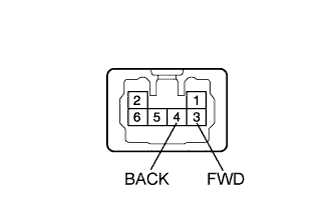
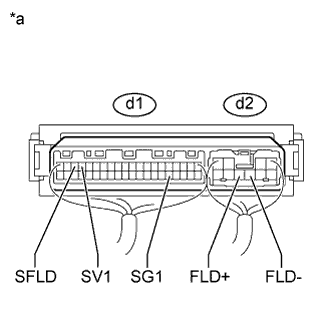
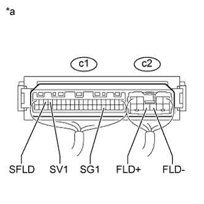

СИСТЕМА ЗАДНИХ СИДЕНИЙ С ЭЛЕКТРОПРИВОДОМ > Цепь электродвигателя складывания |
| 1.ПРОВЕРЬТЕ НОЖКУ СИДЕНЬЯ В СБОРЕ |
|  |
Для левой стороны:
Снимите ножку левого сиденья № 3 в сборе (Нажмите здесь).
Убедитесь, что когда к контактам разъема электродвигателя подушки подключается аккумуляторная батарея, ножка сиденья № 3 плавно перемещается.
Для правой стороны:
Снимите заднее сиденье № 2 в сборе (Нажмите здесь).
Убедитесь, что когда к контактам разъема электродвигателя подушки подключается аккумуляторная батарея, ножка сиденья № 2 плавно перемещается.
| Условия измерений | Заданные условия |
| Положительный (+) вывод аккумуляторной батареи → 3 (FWD) Отрицательный (-) вывод аккумуляторной батареи → 4 (BACK) | Вперед |
| Положительный (+) вывод аккумуляторной батареи → 4 (BACK) Отрицательный (-) вывод аккумуляторной батареи → 3 (FWD) | Назад |
| Результат | Следующий шаг |
| OK (для левой стороны) | А |
| OK (для правой стороны) | B |
| NG (для левой стороны) | C |
| NG (для правой стороны) | D |
|
| ||||
|
| ||||
|
| ||||
| А | |
| 2.ПРОВЕРЬТЕ ЖГУТ ПРОВОДОВ И РАЗЪЕМ (ЭБУ СКЛАДЫВАНИЯ СИДЕНЬЯ – НОЖКА СИДЕНЬЯ № 3) |
Отсоедините разъемы d2 и d1 ЭБУ.
Отсоедините разъем d4 ножки сиденья № 3.
Измерьте сопротивление в соответствии со значениями, приведенными в таблице ниже.
| Контакты для подключения диагностического прибора | Режим | Заданные условия |
| d1-17 (SV1) - d4-5 (HLV) | Всегда | Менее 1 Ом |
| d1-17 (SV1) - масса | Всегда | 10 кОм или более |
| d1-18 (SFLD) - d4-2 (HLS) | Всегда | Менее 1 Ом |
| d1-18 (SFLD) - масса | Всегда | 10 кОм или более |
| d1-25 (SG1) - d4-6 (HLG) | Всегда | Менее 1 Ом |
| d1-25 (SG1) - масса | Всегда | 10 кОм или более |
| d2-8 (FLD+) - d4-3 (FWD) | Всегда | Менее 1 Ом |
| d2-8 (FLD+) - масса | Всегда | 10 кОм или более |
| d2-7 (FLD-) - d4-4 (BACK) | Всегда | Менее 1 Ом |
| d2-7 (FLD-) - масса | Всегда | 10 кОм или более |
|
| ||||
| OK | |
| 3.ПРОВЕРЬТЕ ЛЕВЫЙ ЭБУ СКЛАДЫВАНИЯ СИДЕНЬЯ |
Снимите левый ЭБУ складывания сиденья, не отсоединяя его разъемы (Нажмите здесь).
|  |
Измерьте напряжение в соответствии со значениями, приведенными в таблице.
| Контакты для подключения диагностического прибора | Условие | Заданные условия |
| d1-17 (SV1) - d1-25 (SG1) | Замок зажигания в положении OFF (ВЫКЛ) | Менее 1 В |
| Зажигание включено | 5,5 - 8 В | |
| d1-18 (SFLD) - d1-25 (SG1) | Электродвигатель работает | Формирование импульсов |
| d2-8 (FLD+) - масса | Переключатель складывания левого сиденья № 1 или № 2 (складывание) | 11 – 14 В |
| d2-7 (FLD-) - масса | Переключатель складывания левого сиденья № 1 или № 2 (возврат) | 11 – 14 В |
| *a | Устройство с подсоединенным жгутом проводов (левый ЭБУ складывания сиденья) |
|
| ||||
| OK | ||
| ||
| 4.ПРОВЕРЬТЕ ЖГУТ ПРОВОДОВ И РАЗЪЕМ (ЭБУ СКЛАДЫВАНИЯ СИДЕНЬЯ – НОЖКА СИДЕНЬЯ № 2) |
Отсоедините разъемы c2 и c1 ЭБУ.
Отсоедините разъем c4 ножки сиденья № 2.
Измерьте сопротивление в соответствии со значениями, приведенными в таблице ниже.
| Контакты для подключения диагностического прибора | Условие | Заданные условия |
| c1-17 (SV1) - c4-5 (HLV) | Всегда | Менее 1 Ом |
| c1-17 (SV1) - масса | Всегда | 10 кОм или более |
| c1-18 (SFLD) - c4-2 (HLS) | Всегда | Менее 1 Ом |
| c1-18 (SFLD) - масса | Всегда | 10 кОм или более |
| c1-25 (SG1) - c4-6 (HLG) | Всегда | Менее 1 Ом |
| c1-25 (SG1) - масса | Всегда | 10 кОм или более |
| c2-8 (FLD+) - c4-3 (FWD) | Всегда | Менее 1 Ом |
| c2-8 (FLD+) - масса | Всегда | 10 кОм или более |
| c2-7 (FLD-) - c4-4 (BACK) | Всегда | Менее 1 Ом |
| c2-7 (FLD-) - масса | Всегда | 10 кОм или более |
|
| ||||
| OK | |
| 5.ПРОВЕРЬТЕ ПРАВЫЙ ЭБУ СКЛАДЫВАНИЯ СИДЕНЬЯ |
Снимите правый ЭБУ складывания сиденья, не отсоединяя его разъемы (Нажмите здесь).
|  |
Измерьте напряжение в соответствии со значениями, приведенными в таблице.
| Контакты для подключения диагностического прибора | Условие | Заданные условия |
| c1-17 (SV1) - c1-25 (SG1) | Зажигание выключено | Менее 1 В |
| Зажигание включено | 5,5 - 8 В | |
| c1-18 (SFLD) - c1-25 (SG1) | Электродвигатель работает | Формирование импульсов |
| c2-8 (FLD+) - масса | Переключатель складывания правого сиденья № 1 или № 2 (складывание) | 11-14 В |
| c2-7 (FLD-) - масса | Переключатель складывания правого сиденья № 1 или № 2 (возврат) | 11-14 В |
| *a | Устройство с подсоединенным жгутом проводов (правый ЭБУ складывания сиденья) |
|
| ||||
| OK | ||
| ||